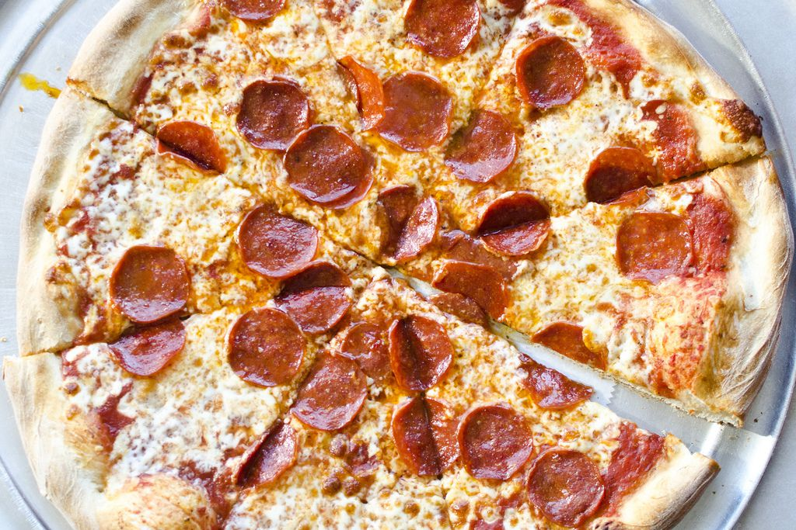

Pizza Recipe

Pizza! Everyone has tried and loves a good pizza, whether from your favourite local pizza place or in your own kitchen, pizza is renowned for its comfort. A simple dish that can be made in thousands of ways; crispy, thin, thick, deepdish.. How will you have yours tonight?
Ingredients
- 1 Package ¼oz Active Dry Yeast
- 1tsp Sugar
- 1¼ cups Warm Water
- ¼ cup Canola Oil
- 1tsp Salt
- 4 cups All Purpose Flour
- ½lb Ground Beef
- 1 small Onion, Chopped
- 1 can (15oz) Tomato Sauce
- 3tsp Dried Oregano
- 1tsp Dried Basil
- 1 medium Green Pepper, Diced
- 2 cups Shredded Mozzarella Cheese
Steps to make
- In large bowl, dissolve yeast and sugar in water; let stand for 5 minutes. Add oil and salt. Stir in flour, 1 cup at a time, until a soft dough forms.
- Turn onto a floured surface; knead until smooth and elastic, 2-3 minutes. Place in a greased bowl, turning once to grease the top. Cover and let rise in a warm place until doubled, about 45 minutes. Meanwhile, cook beef and onion over medium heat until beef is no longer pink, breaking meat into crumbles; drain.
- Punch down dough; divide in half. Press each half into a greased 12-in. pizza pan. Combine the tomato sauce, oregano and basil; spread over each crust. Top with beef mixture, green pepper and cheese.
- Bake at 400° for 25-30 minutes or until crust is lightly browned.
Recipe credit: Homemade Pizza
Home